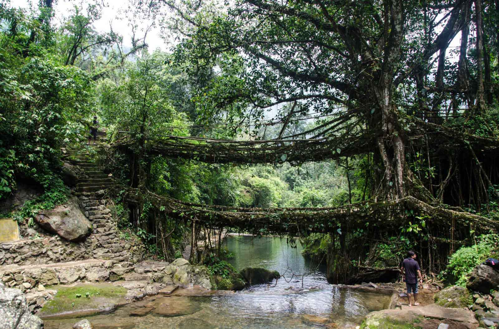

Meghalaya is a state in northeastern India. Meghalaya was formed by carving out two districts from the state of Assam: the United Khasi Hills and Jaintia Hills, and the Garo Hills on 21 January 1972.The population of Meghalaya as of 2016 is estimated to be 3,211,474.Meghalaya covers an area of approximately 22,430 square kilometres, with a length to breadth ratio of about 3:1